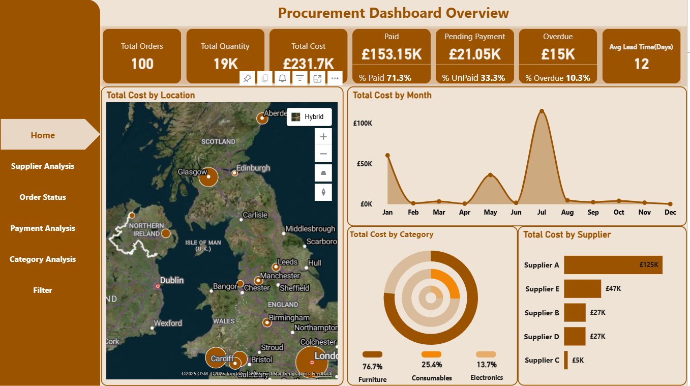

Business Background
GlobalSource Ltd., a mid-sized company managing multiple suppliers across diverse categories, faced challenges with inconsistent supplier performance, delivery delays, and inefficient payment processes.
Business Objective
- Strengthen supplier relationships
- Enhance operational efficiency
- Reduce procurement costs
- Enable data-driven decision-making through analytics
Key Challenges
- Supplier performance (reliability & cost-effectiveness)
- Order efficiency (delays and cancellations)
- Category optimization (high-demand categories)
- Payment bottlenecks (slow or inaccurate payments)
Project Goal
Transform procurement data into actionable insights with Power BI by:
- Tracking supplier KPIs
- Monitoring order cycles & costs
- Streamlining payment analysis
Tools & Skills Used
- Power BI (Power Query, DAX, interactive dashboards)
- Data Modeling (relationships between suppliers, categories, orders, payments)
- Business Analysis (translating business needs into metrics and dashboards)
Dashboard Highlights
- Supplier Performance: On-time delivery rates, cost-effectiveness scorecards
- Order Cycle Efficiency: Trends in delays, cancellations, average lead time
- Payment Analysis: Paid vs. unpaid orders, average processing time
- Category Analysis: High-demand categories for negotiations
Why This Matters
Procurement is a critical cost center. Small inefficiencies can snowball into big financial losses. Analytics empowers procurement officers to:
- Negotiate better contracts
- Improve supplier accountability
- Ensure smoother cash flow
Outcome
This dashboard delivered actionable insights to support strategic procurement decisions, helping GlobalSource Ltd. optimize supplier relationships, improve order efficiency, and streamline payments.
Preview
📊 Dashboard Screenshots:
